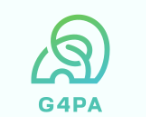

G4PA hay "Group 4 Protects Animals" là một nhóm hoạt động với mục tiêu tuyên truyền nâng cao ý thức bảo vệ động vật của con người. Chúng tôi cung cấp thông tin chi tiết về các loài động vật đang gặp nguy hiểm, các mối đe dọa đối với chúng như săn bắn trái phép, mất môi trường sống và biến đổi khí hậu. Ngoài ra, trang web khuyến khích người dùng tham gia vào các hoạt động bảo vệ động vật như quyên góp, tình nguyện và tuyên truyền. Chúng tôi mong muốn xây dựng một cộng đồng mạnh mẽ, hỗ trợ nhau trong việc bảo vệ động vật và bảo vệ thiên nhiên. Cam kết của chúng tôi là giúp duy trì sự sống cho các loài động vật và bảo vệ môi trường sống của chúng, đồng thời cung cấp tài nguyên hữu ích cho các tổ chức bảo tồn.
Miniwiki: Chúng tôi cung cấp tất tần tật thông tin về các loài động vật. Bạn sẽ được chiêm ngưỡng chúng một cách trọn vẹn về cả hình ảnh lẫn các video sống động. Nếu bạn chưa tìm được loài động vật mà bản thân muốn tìm hiểu? Liên hệ cho chúng tôi tại About Us nhé! G4PA chân thành xin lỗi vì trải nghiệm chưa thật sự đầy đủ này, chúng tôi đã và đang hoàn thiện từng ngày một, hy vọng nhận được sự ủng hộ của bạn!
Donation: Tại đây chúng tôi nói không với khai gian, mọi khoản ủng hộ được các bạn gửi về sẽ được cập nhật sao kê liên tục. Nếu thấy hứng thú với loài động vật nào, bạn có thể gửi ủng hộ cho chúng, chúng tôi sẽ giúp bạn gửi khoản đó về các vườn quốc gia hiện chăm sóc loài đó. Bật mí nhỏ: donate có thể giúp loài động vật bạn đang mong chờ xuất hiện trên trang web của G4PA nhanh hơn đấy!
About Us: Trong quá trình thực hiện sẽ không thể tránh khỏi sai sót, nếu có bất kì đóng góp ý kiến nào, hãy liên hệ với chúng tôi tại đây. Rất cảm ơn sự ủng hộ của bạn dành cho G4PA.
Exercise: Các bài luyện tập, vận dụng được tổng hợp tại đây.